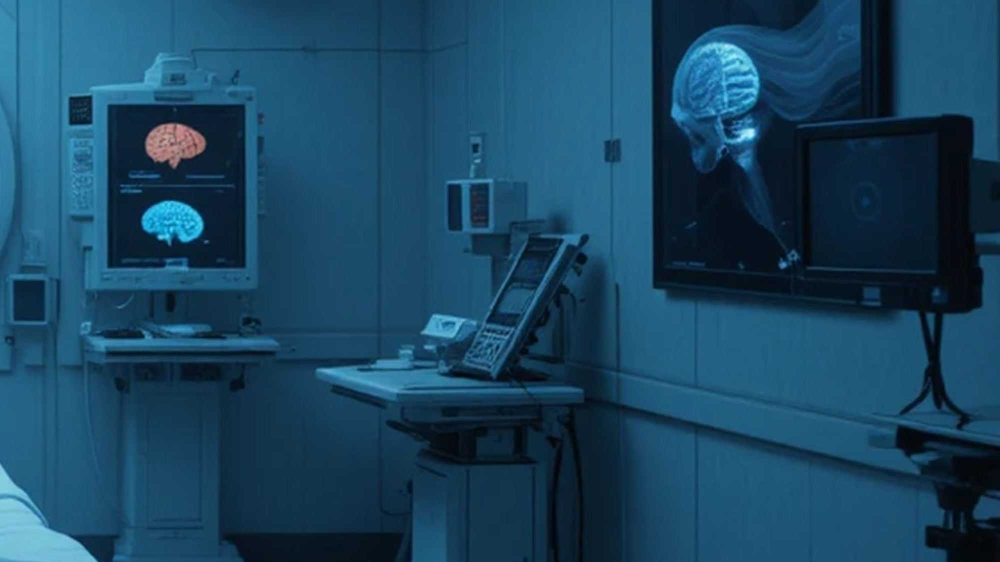
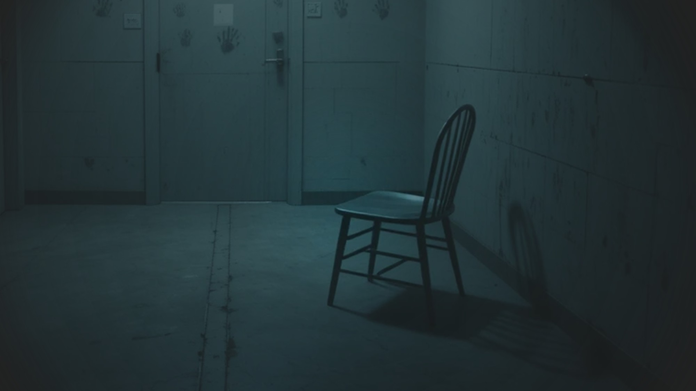
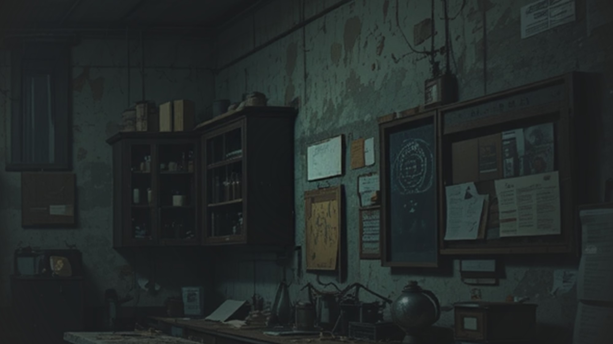
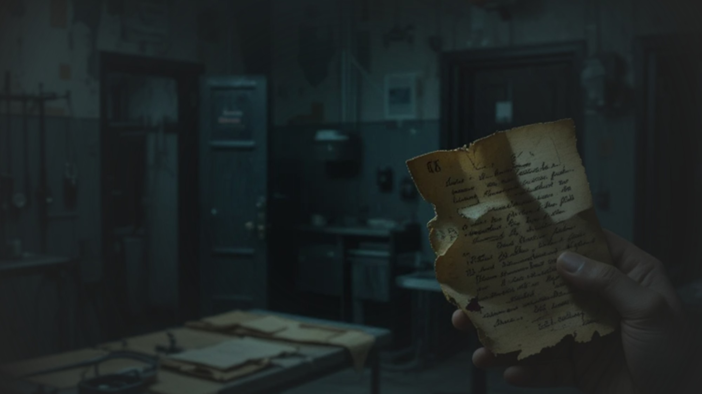

倒反的秩序：密室逃脫計畫
一場心理與秩序的拉鋸，一次虛實交織的密室體驗。
小說內容

「門，關上了。」
空氣中瀰漫著鐵鏽與冷氣的味道，地板濕滑，牆面一如既往地潔白——潔白得不自然，像是清洗過無數次的手術台。主角站在房間中央，手中握著一張寫有「秩序即真理」的紙條，而四周的監控鏡頭開始移動……

他知道，這不是遊戲，但也不是現實。這是一場測試，一場誰也逃不出的秩序實驗。
遊戲體驗

點擊下方區域進入遊戲（請於正式版中補上正確連結）：

開發心得
開始這個企劃時，其實只是想把小說「具象化」，讓讀者能「走進」場景。密室逃脫的形式讓故事有了互動性，也讓我能嘗試不同的敘事節奏。
在設計場景機關時，我發現恐懼不是來自難度，而是「未知」本身。於是我讓玩家常常懷疑：這是規則，還是陷阱？
逃脫之後
在黑暗與控制中存活，是否意味著我們仍然自由？
素材感謝
感謝以下資源協助完成本作品：
- 📷 圖片素材：scene1～4、outro 皆為自行拍攝或授權圖片
- 🎵 音效素材：Freesound 使用者 ABC123 授權公開音效
- 🔠 字體：Google Fonts – Noto Sans TC